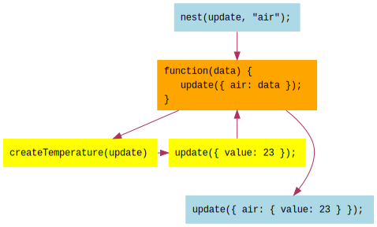
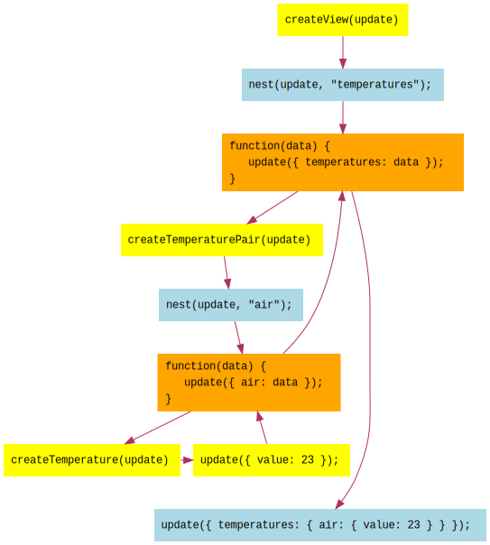

In the previous lesson, 09 - Nesting, we looked at how we could
nest the update function so that we could have multiple instances of the temperature
element, each at its own path within the top-level model. The temperature code did not need
to change, it continued to work with just its own subset of the model.
As a first way of signaling nested updates, we used objects shaped as { path: ..., data: ... }
to indicate the path at which to update the model. In this lesson, we'll use a different approach.
Object.assignInstead of sending updates as { path: ..., data: ... }, let's try going back to using
Object.assign. Remember, in that case we just sent data objects as updates, and merged them in
with Object.assign. At the time, we weren't nesting, so our top-level model was:
{ value: 22, units: "C" }We were sending updates such a { value: 23 }.
Now, our top-level model is:
{ air: { value: 22, units: "C" },
water: { value: 84, units: "F" }
}So we need to send updates such as:
{ air: { value: 23 } }We then hope to merge that in with the top-level model to obtain:
{ air: { value: 23, units: "C" },
water: { value: 84, units: "F" }
}Whereas before we were "tagging" our updates with a path property, nesting with plain data
objects is just a matter of placing the incoming data within the object using the path:
var nest = function(update, prop) {
return function(obj) {
var result = {};
result[prop] = obj;
update(result);
};
};Again we are wrapping update with nest. Now, when the temperature code calls
update({ value: 23 }), if we nest the temperature element with nest(update, "air"), the
update will be transformed into { air: { value: 23 } }.

We can then try to merge in the update using Object.assign as our accumulator function:
var models = flyd.scan(Object.assign,
{ air: { value: 22, units: "C" },
water: { value: 84, units: "F" }
},
update);But this doesn't work. Try it out below. Can you see what is not quite working? Do you have an idea why?
Above, changing units works at first, but increasing or decreasing the temperature causes us to lose the units. What's happening?
The problem is that Object.assign does a shallow merge: it only merges properties at the
first level. Nested properties from the source overwrite the nested properties in the target:
Object.assign(
{ air: { value: 22, units: "C" },
water: { value: 84, units: "F" }
},
{ air: { value: 23 }
}
);
// Result is:
{ air: { value: 23 },
water: { value: 84, units: "F" }
},As you can see above, at the first level we have air and water, so Object.assign merges
air and keeps water. But after that, whatever is under air overwrites whatever was there
previously. So { value: 23 } entirely replaces { value: 22, units: "C" } and we lose units.
What we need is a deep merge, so that properties at every level are merged together.
There are several options for deep merge support. One of them is Lodash, which provides _.merge. Another is deepmerge, which is a tiny library dedicated to provide deep merge support.
Before we do that, though, let's talk about multiple levels of nesting.
Now that we'll be passing plain objects via update and merging them into the model, we can use
more than one level of nesting.
What I mean by that is, we can nest temperatures at air and water, but then we can create
another element, temperaturePair, which contains the air and water temperatures. Then, we
can in turn nest temperaturePair at temperatures.
Our top-level model is now:
{ temperatures:
{ air: { value: 22, units: "C" },
water: { value: 84, units: "F" }
}
}The following illustrates multiple levels of nesting. createTemperaturePair nests
createTemperature at air and water. createView in turn nests createTemperaturePair at
temperatures.

Multiple levels of nesting means that we can use and re-use elements at various points within our top-level model. The code for these elements does not need to change, and is blissfully unaware of where they are nested within the top-level model. They can happily continue to work with just their model.
This also enables us to have elements that use properties like value in their model, without
conflicting with other elements that also use value. Each element has its separate place within
the top-level model. We can compose elements out of other elements, and compose those elements
into other elements, and so on.
Let's put everything together. You can see how we have multiple levels of nesting. As previously
discussed, we're using Lodash's _.merge to achieve deep merging of updates into the model.
temperatures so that your top-level model is
{ temperatures: ..., other: ... }, of course replacing other with your choice of property name.
The element that you add should not "know" where it is nested within the top-level model. For bonus
points, add another element that is nested within the element that you added.When you are ready, continue on to 11 - Components.
Meiosis is developed by @foxdonut00 / foxdonut and is released under the MIT license.